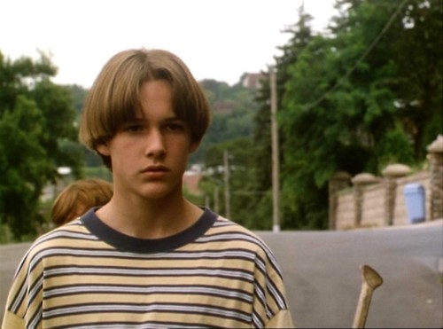
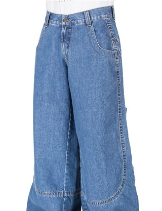

The stylish men of 90s
The 90s style was mainly with larger and unfit clothes.An example can be seen below.

The 90s was mostly old, vintage and over-sized clothes. It was a time where you could wear anything and kind of get away with it since most people worn kind of "messy" clothes.From one point it's good that the trend went out of style, but from another point it is kind of disappointing. There are still people that like to wear them but everyone knows you'd just look out of order, in a way, compared to everyone else. It went to the exact opposite in s few years, from over sized to tight clothes especially jeans. Click here for more examples of today's trends.
Men's fashion was mostly with those types of clothes until recent years. In the picture below
celebrities also had the "baggy" style which a lot of people liked

Large jeans was one of the biggest change from the 90s to today's style.
Even if they're out of style there are some who still like to show the old school style.

Here, Jay-Z wears those type of clothes and it is a little more acceptable for him to since he was a rapper in the 90s,anyone that just now would try to get into that style just simply looks bad.You can find more exaples of Jay-z with this style here
To get a little away from the bottoms, jeans specifically, windbreakers were also very used and many people wore them. Still to this day they are still in style, most likely because of how useful they are. Could be worn when it's a little warm, could be worn when it's a little cold, and still looks great. The only difference in windbreakers that's a bit visible is the amount of colors they have. Most of them today are not too colorful as most clothes were back in the 90s. It is, however, in my opinion a good thing since too many different colors make your outfit just funny.

Some more trends that changed:
- The "Bowl cut" haircut
- Shoes with chunky laces
- Starter jackets
- Baggy vertical striped shirts

To go in the opposite direction from things that kind of did stay in style, here are some things that me, and I'm sure everyone else too is happy they went out of style ranking from worst to least worst:
- JNCO jeans... 
- Shoes with chunky laces
- Starter jackets
- Baggy vertical striped shirts